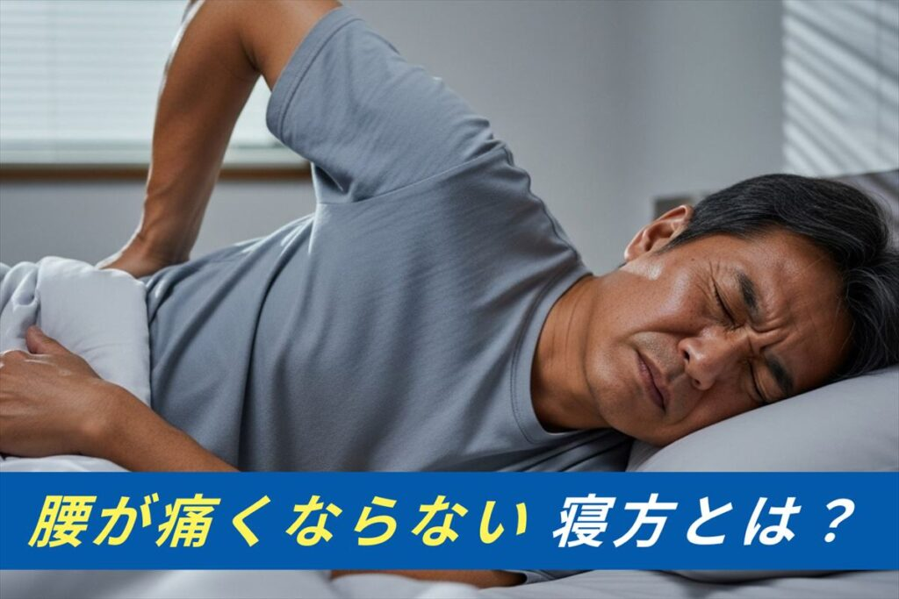
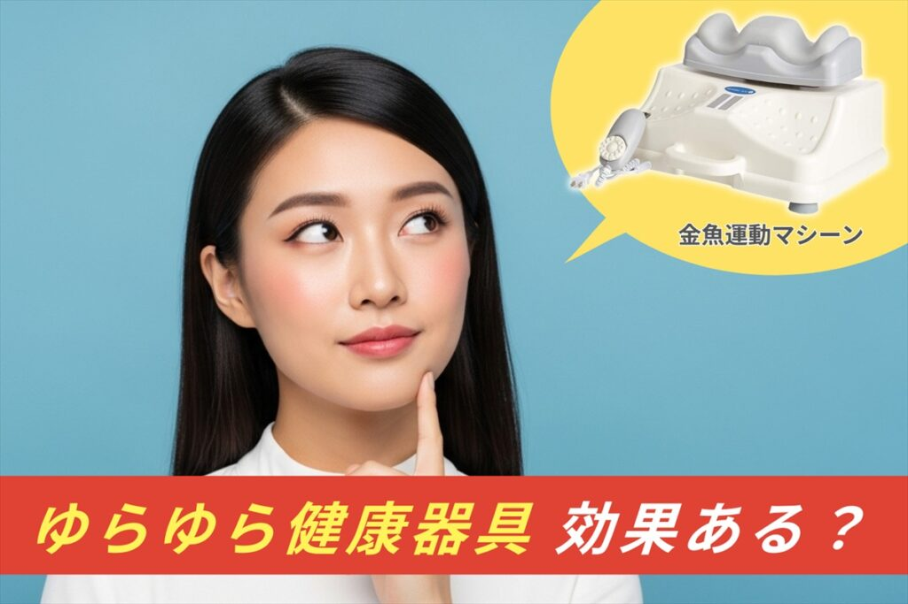
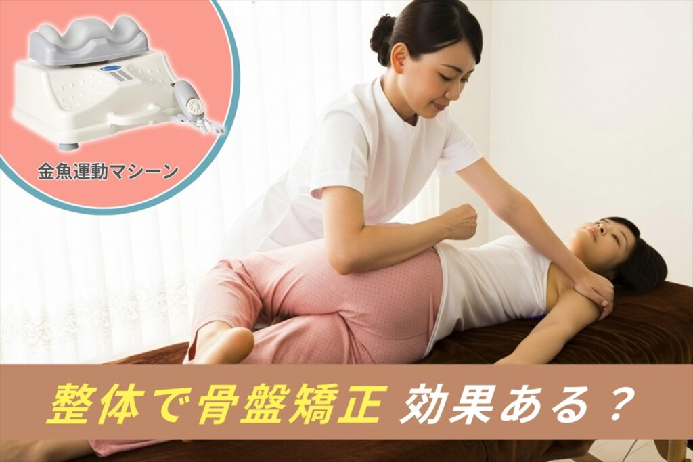
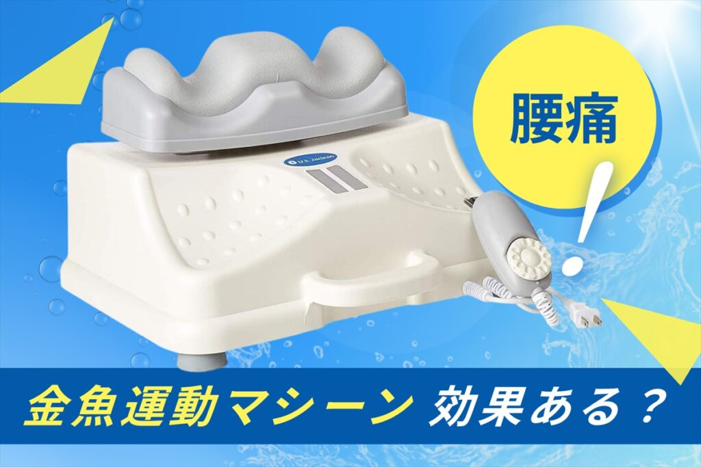

ブログ
金魚運動

腰が痛くならない！腰痛持ちの寝方完全ガイド〜うつ伏せNGと楽に眠れる姿勢の作り方
「夜、腰が痛くてぐっすり眠れない」「朝起きると腰がズーンと重い」なんてこと、ありませんか？睡眠をとって疲れた腰を休ませたいのに、寝方によってはかえって腰痛が悪化することも...
金魚運動

ゆらゆら健康器具の効果と口コミ！腰痛・運動不足におすすめの選び方
「最近、体が重だるい…」「運動不足なのはわかっているけど、体に負荷がかかるのは避けたい」「座りっぱなしで体がガチガチになっている気がする」そんなお悩みをお持ちの方へ...
金魚運動

【プロが監修】整体で骨盤矯正を受けると腰痛に効果があるのか？
「マッサージに行っても腰痛がすぐ戻る」「朝起きると腰が重い」・・・そんな慢性的な不調の原因は、もしかすると“骨盤の歪み”かもしれません。本記事では、整体による骨盤矯正の仕組みや...
金魚運動

金魚運動マシンは効果ある？腰痛への効果と選び方を徹底解説【寝ながらセルフケア】
「慢性的な腰痛をなんとかしたいけど、ジムに通う時間もなければ、激しい運動は苦手…」「長時間のデスクワークで体がガチガチ。自宅で手軽にできるセルフケア方法はないだろうか？」...